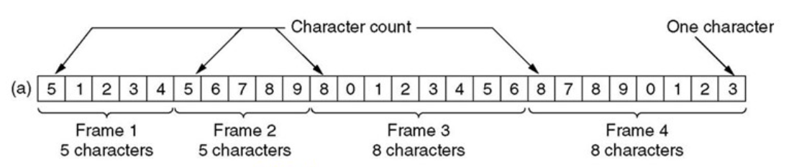
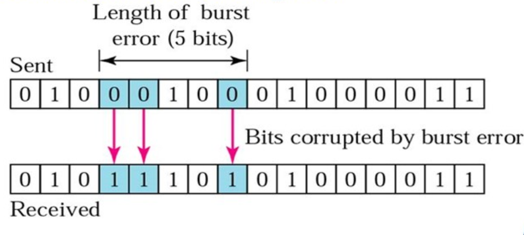
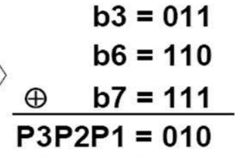
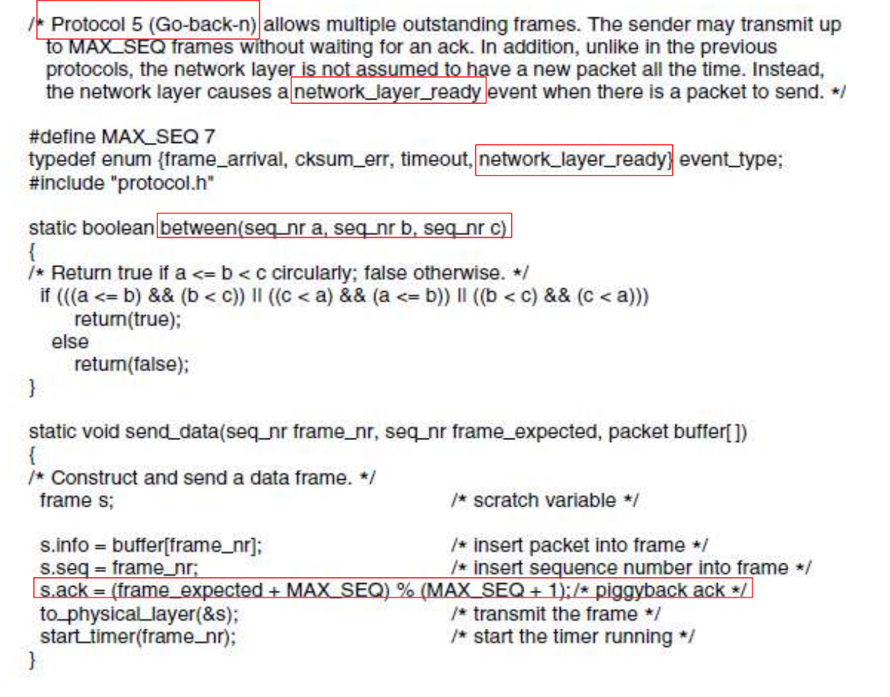
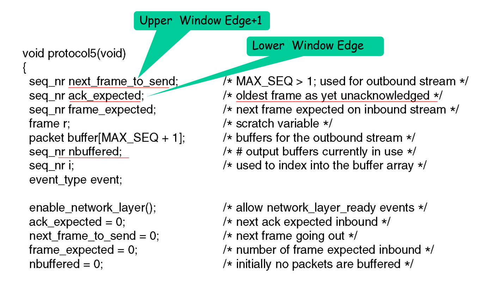
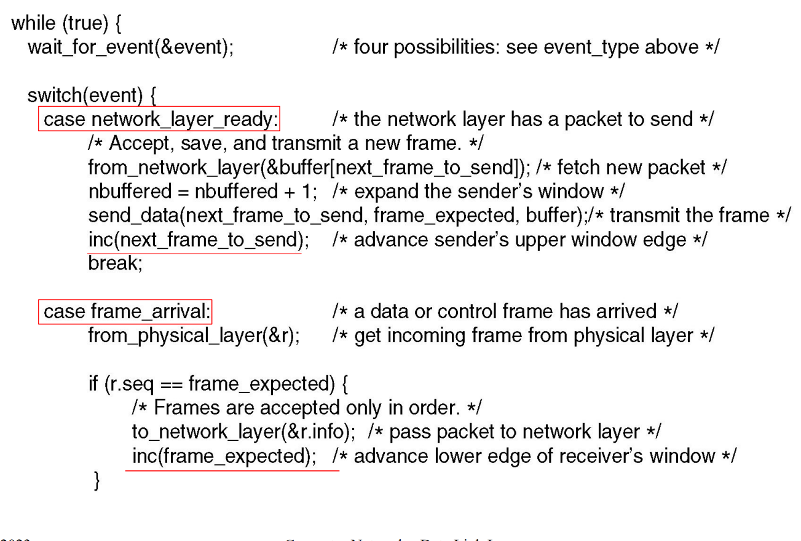
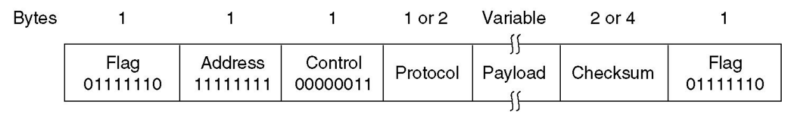

数据链路层
数据链路层的位置、功能和服务
数据链路层和位置和功能
数据链路层负责通过物理层以可靠、高效的方式将数据包（帧）在相邻节点之间传输。
数据链路层提供了打包，流量控制，地址索引，错误控制，介质访问控制等的功能。
其中介质访问控制是专属于局域网的技术，主要负责处理数据包广播中遇到的问题，而在广域网中常用点对点链接的方式，故没有相关的问题。
设计目标就是在两个响铃的节点之间实现可靠、高效的通信。
封装

在数据链路层的封装：将上一层传输过来的净荷附加上帧头和帧尾构成一个帧。
数据链路层中的传输是逐级进行的，被称作逐级通信hop-to-hop communication。
数据链路层一般由网卡实现
- 发送方：将网络层的包打包为一个帧，在加上错误纠正，可靠传输和流量控制等的功能
- 接收方：首先检验传输过程中是否发生错误，并进行流量控制和可靠传输等的功能
- 数据链路层常常通过硬件实体——网卡实现
数据链路层提供的服务
-
无连接的服务：
- 无确认的无连接服务：没有确认帧和逻辑链接，大多数的局域网属于这种方式
- 有确认的无连接服务：含有一个确认帧，在不可靠的传输信道中应用比较广泛，比如Wi-Fi
-
面向连接的服务：
需要建立连接，每一个传输的帧都会被编号。常见的有
ATM和HDLC
设计中处理的问题
成帧控制
如何从物理层中传输的字节流中识别出不同的帧。
设计成帧功能的要求
- 简单：易于实现
- 透明：同传输的内容无关
- 高效：使用的字节尽量少
- 鲁棒：不易出错，即使出错也应该尽快恢复
字符计数法

在帧头中添加一个表示内容中字符的数量（包括帧头）。但是如果传输的时候帧头中字符数量的字段发生了错误，这个错误不易纠正。
字节/字符填充
在帧的首尾添加标志符以标记帧的开始和结束。标志符往往是传输内容中不常使用的字符。
这种方式实现透明传输比较复杂：因为作为标志符的字符在传输内容中也可能使用。于是为了实现透明传输，在传输内容中使用标志符时需要在前面加上转义字符，通知接受者后面的标志符并不是标志符。
这种方式在PPP协议中得到使用。
这种方式同传输内容的编码方式高度相关，而且往往都是字符编码，直接传输字节就显得不太可能。
比特填充
使用固定的二进制位串位置帧开始和结束的标志：01111110。
但是在传输的数据中也会存在出现标志位串的可能性，于是为了避免这种问题，硬件会在内容中每遇到5个连续的1就在后面添加一个0。在接受方接受数据的时候，每接受到五个连续的1就去掉后面的0。

但是如果在传输的过程中遇到01110110这种位串，其中发生了一次位翻转成为标志位，或者反过来，就可能导致传输错误。
物理层编码违例法
利用物理层编码中违法的编码作为帧的开始和结束标志。
错误控制
错误的类型
- 帧丢失：发出的帧就没有达到接收方。这种错误属于流量控制的部分。
- 帧损坏：接受帧的部分比特错误。
单比特错误就是只有一个比特发生了错误。
突发错误意味着至少两个比特在传输过程中发生了错误。突发错误的长度不是指错误比特的数量。

错误的侦测
- 奇偶校验检测单个比特错误
- 循环冗余校验可以检测部分突发性的错误
奇偶校验
通过添加一个奇偶校验位来验证数据的传输过程中是否发生错误。
奇偶校验只能检验奇数的错误。
汉明码
为了校验单个错误需要的校验码位数：
设m表示信息的位数，r表示校验码的位置，n为传输的位置，即n=m+r。
为了纠正单个的错误，需要有下列的不等式成立：
化简得到：
为了设计汉明码，首先需要给每一位编号：从左到右，从1开始依次编号。
在编码中，2的次方位（2，4，8，16）是校验码位，剩下的位数就是传输的数据位。其中每一个校验位覆盖的数据为是不同的，例如对于8位的ASCII码的进行编码：
| 编号 | 1 | 2 | 3 | 4 | 5 | 6 | 7 | 8 | 9 | 10 | 11 |
|---|---|---|---|---|---|---|---|---|---|---|---|
| 码字 | 0 | 0 | 1 | 0 | 0 | 0 | 0 | 1 | 0 | 0 | 1 |
发送前编码：
3=1+2，5=1+4，6=2+4，7=1+2+4，9=1+8，10=2+8，11=1+2+8
所以校验码1就需要检验1，3，5，7，9，11，所以值就是0，其他的检验码依次类推，需要检验所有编码中设计的位。
生成汉明码还有一种简便方法：
在需要生成编码时，将码字中为1的各位码字表示为二进制码，再按模2求和，所得的结果就是校验码，下图中是将数据1011进行编码的示例：

需要注意的是，得到的校验码是倒序的。
在需要阶码的时候，将码字中为1的各位码字位号表示为二进制码，再按模2求和，如果和为0表示无差错，如果不为0表示差错的位号。
CRC循环冗余校验
CRC主要用于突发错误的侦测。
将位串当作多项式项目的系数。例如110001就可以写成多项式：
发送方和接收方首先需要约定好一个相同的校验多项式。校验码的位数同校验多项式最高次项的次数相同。
发送方在生成校验码时，首先在数据的后面补上同校验码位数相同的零，再和校验多项式做除法取余数，余数就是生成的校验位。

接受方在接收到数据之后利用校验多项式计算除法的余数，如果余数为0则说明传输中没有问题，反之则存在错误。
r位的校验码可以发现所有长度在r以下的错误。
所有奇数个比特翻转的错误一定能够被发现。
对于长度大于r的错误被遗漏的概率为。
错误的纠正
当传输的介质比较可靠的时候，使用错误侦测再进行重传是更加便宜的方式。
当传输的介质不是特别可靠的时候，比如无线网络，最好使用错误纠正码来确保接受者能够纠正少量的错误。
流量控制
流量控制的目的就是为了防止接收方被发送方过快的发送阻塞，导致传输的数据丢失。
数据链路层的流量控制都是基于反馈的流量控制，即通过发送方通过接受接受方发送的ACK信息来决定怎么发送数据。
基础流量控制协议
使用C语言编写代码表示协议，定义一个头文件protocol.h：
//
// Created by ricardo on 23-3-17.
//
#ifndef DATA_LINK_LAYER_PROTOCOL_H
#define DATA_LINK_LAYER_PROTOCOL_H
#define MAX_PKT 1024
typedef enum {
false,
true
} boolean;
typedef unsigned int seq_nr;
typedef struct {
unsigned char data[MAX_PKT];
} packet;
typedef enum {
data,
ack,
nck,
} frame_kind;
typedef struct {
frame_kind kind;
seq_nr seq;
seq_nr ack;
packet info;
} frame;
void wait_for_event(event_type *event);
void from_network_layer(packet *p);
void to_network_layer(packet* p);
void from_physical_layer(packet *p);
void to_physical_layer(packet* p);
void start_timer(seq_nr k);
void end_timer(seq_nr k);
void start_ack_time();
void end_ack_time();
void enable_network_layer();
void disable_network_layer();
#endif //DATA_LINK_LAYER_PROTOCOL_H
协议1 乌托邦单工协议
这个协议假设：
- 通信的单工的
- 通信是无错的
- 接收方有着无限的缓存
即：这个协议不需要任何的错误控制和流量控制

//
// Created by ricardo on 23-3-17.
//
typedef enum {
frame_arrival
} event_type;
#include "protocol.h"
void send() {
frame s;
packet buffer;
while (true) {
from_network_layer(&buffer);
s.info = buffer;
to_physical_layer(&s);
}
}
void receive() {
frame r;
event_type event;
while (true) {
wait_for_event(&event);
from_physical_layer(&r);
to_network_layer(&r.info);
}
}
协议2 单工发送——等待协议
这个协议假设：
- 通信是单工的
- 通信是没有错误的
- 接受者有着有限的缓存
这个协议使用了一种发送——等待机制：
- 发送方发送数据开始等待
- 接收方接受数据并发送确认帧
ACK - 发送方收到确认帧，继续发送

//
// Created by ricardo on 23-3-17.
//
typedef enum {
frame_arrival
} event_type;
#include "protocol.h"
void send()
{
frame s;
packet buffer;
event_type event;
while (true)
{
from_network_layer(&buffer);
s.info = buffer;
to_physical_layer(&s);
wait_for_event(&event);
}
}
void receive()
{
frame r, s;
event_type event;
while (true) {
wait_for_event(&event);
from_physical_layer(&r);
to_network_layer(&r.info);
to_physical_layer(&s);
}
}
协议3 带有重试的主动确认协议
如果将协议2应用在不可靠的传输信道上：
-
传输过程中帧损坏了：
接受者可以使用
CRC纠错码发现和丢弃这个损坏的帧发送者在等待
ACK帧的过程中超时之后重新发送这个帧 -
传输过程中帧丢失了：
如果是数据帧丢失了：发送者超时之后重新发送
如果是
ACK帧丢失了：发送者超时之后重新发送
但是ACK帧丢失之后重传可能遇到一个问题：发送者重新发送的数据帧会被接受者当作是新的数据帧。

为了解决这个问题，我们可以在数据帧的帧头上添加序列编号。
在这里由于实际上只需要两种状态，序列编号只需要一个比特，传输0或者1就可以了。
这样就将这个协议改造成了一个自动重传协议Automatic Repeat reQuest aka ARQ。
这个协议称为：单向传输数据的停止等待ARQ协议
- 发送方在数据帧中添加校验字段，发送之后启动超时定时器
- 接受方在接受数据之后利用校验码检查错误，出错就丢弃数据，校验无误的情况下发送确认帧
- 发送法收到确认帧，发送下一帧，重启定时器
- 如果发送方定时器超时，发送方重新发送刚发送的数据帧
- 在数据帧还携带一个序号，接受方根据序号来判断是否是重复发送的数据帧
- 确认帧中也携带序号，发送方通过序号确定是否是重复的确认帧
那么确认帧是必须携带序号吗：
在确认帧发送比较缓慢的时候，缺少序号的确认帧就可能导致问题。

因此确认帧是需要序号的，发送方通过序确认是否是重复的确认帧。
#define MAX_SEQ 1
typedef enum
{
frame_arrival,
cksum_err,
timeout
} event_type;
#include "protocol.h"
void send()
{
seq_nr next_frame_to_send;
frame s;
packet buffer;
event_type event;
next_frame_to_send = 0;
from_network_layer(&buffer);
while (true)
{
s.info = buffer;
s.seq = next_frame_to_send;
to_physical_layer(&s);
start_timer(s.seq);
wait_for_event(&event);
if (event == frame_arrival)
{
from_physical_layer(&s);
if (s.ack == next_frame_to_send)
{
stop_timer(s.ack);
from_network_layer(&buffer);
next_frame_to_send = 1 - next_frame_to_send;
}
}
}
}
void receive()
{
seq_nr frame_expected;
frame r, s;
event_type event;
frame_expected = 0;
while (true)
{
wait_for_event(&event);
if (event == frame_arrival)
{
from_physical_layer(&r);
if (r.seq == frame_expected)
{
to_network_layer(&r.info);
frame_expected = 1 - frame_expected;
}
s.ack = 1 - frame_expected;
to_physical_layer(&s);
}
}
}
协议4 实用的停止等待ARQ协议
设计原则：
-
在数据帧中增加校验字段，发送帧之后启动超时定时器
-
接收方对于收到的数据进行校验，如果出错则丢弃，如果校验无错，就发送确认帧或者通过下一个帧进行捎带确认
-
收到确认之后发送下一帧，重启定时器
-
如果定时器超时，则重新发送刚发送的数据帧
-
数据帧中携带发送序号，根据需要判断是否需要是重复的数据帧
-
根据确认帧判断是否重复的确认帧
捎带应答：
当收到一个数据帧时，不同于立刻发送一个确认帧，而是等待网络层给出下一个需要发送的数据包，并把确认帧附在需要发送的数据帧之后一同发送出去。
在这个过程中，发送方和确认方都需要维持一个滑动窗口。
#define MAX_SEQ 1
typedef enum
{
frame_arrival,
cksum_err,
timeout
} event_type;
#include "protocol.h"
void protocol()
{
seq_nr next_frame_to_send;
seq_nr frame_expected;
frame r, s;
packet buffer;
event_type event;
from_network_layer(&buffer);
s.info = buffer;
s.seq = next_frame_to_send;
s.ack = 1 - frame_expected;
to_physical_layer(&s);
start_timer(s.seq);
while (true)
{
wait_for_event(&event);
if (event == frame_arrival)
{
from_physical_layer(&r);
if (r.seq = frame_expected)
{
to_network_layer(&r.info);
frame_expected = 1 - frame_expected;
}
if (r.ack == next_frame_to_send)
{
stop_timer(r.ack);
from_network_layer(&buffer);
next_frame_to_send = 1 - next_frame_to_send;
}
s.info = buffer;
s.seq = next_frame_to_send;
s.ack = 1 - frame_expected;
to_physical_layer(&s);
start_timer(s.seq);
}
}
}
但是这个协议的效率非常的低。
在大部分的时间里，使用这个协议的信道都被阻塞等待确认帧。
协议5 回退N步协议
设计原则：
-
发送方和接收方都需要维持一个滑动窗口：
发送窗口： 发送帧的缓冲队列
接受窗口：接受帧的缓冲队列
-
发送者将被允许在收到确认帧之前发送多个数据帧
-
如果接收方发现了传输错误，那么发送方必须回退到这个错误的帧重发进行纠错，已经发送的数据帧就废弃了
发送窗口大小的约束：
当序号的位数只有时，假设发送窗口的大小达到。
如果发送方发送所有可以发送的帧，而接收方在接受所有的数据之后发送确认帧时失败了，但是此时接受者的序号和发送者的序号相同，接受者会把发送者重新发送的帧当作新发送的帧接受。

因此该协议的发送窗口大小必须满足：
式子中的n表示序号的位数。
协议5的示例实现：




协议6 选择重传协议
Select Repeat/Select Reject。
接收方的缓存大于1，可以接受乱序的帧，并且只要求重传错误的帧。
选择重传中对于窗口大小的限制：
- 发送窗口和接受窗口大小之和不能大于:
-
发送窗口的大小大于接受窗口的大小
-
一般来说，取发送窗口和接受窗口大小为
协议6相对于协议5的改进：
-
设置确认帧定时器：
在收到数据帧之后，等待一段时间的回传帧以进行捎带确认。如果定时器超时还没有等到回传的数据，直接发送确认帧。
利用这种方式减少单独确认帧的发送，提高信道的使用效率。
-
NAK帧：对于同一帧的错误，发送一次NAKNAK帧的序号就是出错帧的序号。
帧接受之后校验出错和序号不对都算是出错。
协议6的示例实现：


协议效率的分析
为了比较不同的协议效率的不同，一般采用最大信道利用率来描述一个协议的效率。
停等协议的效率
在发送过程中没有遇到错误，需要确认帧的情况下，发送数据帧的总时间：
一般来说认为处理时间和发送确认帧的时间是可以忽略不计的，所以总的时间就是：
计算出信道利用率：
因此当传播延迟越小，信道的利用率越高。
再考虑传输中遇到错误的问题。假设每一帧遇到错误的概率为p，可以首先计算出传输出错的数量为：
不难发现测试的信道利用率就是：
引入一个概念——带宽时延积BD：在单程传播时延的时间内，信道可以容纳多少为的数据。带宽时延积还可以用传输时延和发送时延来计算：
上述协议的效率还可以写成：
现在再研究具有滑动窗口的停等协议：
其中W是发送窗口的大小，而且效率的最大值是1。
在考虑上捎带确认的功能，不用发送单独的确认帧，信道的效率还可以提高为：
示例协议
HDLC
HDLC 帧结构
-
同步传输
-
以位为单位
-
可以点对点之间通信，也可以按照主从模型进行通信

其中HDLC的帧还有三种类型：
-
信息：需要传输给上一层的数据。
流量控制，错误纠正等的确认帧也在这部分
-
监督帧：当没有使用
PPP
-
无连接的协议，没有确认帧
-
以字节为单元进行传输
-
只能进行点对点直接通信
PPP和HDLC之间的对比
总的来说就是更加简单。
PPP增加了：
-
可以和多种网络协议共同工作
-
连接和数据压缩的协商
-
用户的身份认证
-
物理层可以使同步或者异步的
同时PPP移除了：
-
错误纠正，但是保留了错误发现
-
流量控制
-
序列号
PPPoE
就是PPP over Ethernet，广泛用于家庭网络中

-
没有序号的帧结构
-
使用字节填充
0x7D作为转义字符在所有的ASCII控制字符（也就是
0x20及其以下）之前都需要添加转义字符 -
地址
0xFF表示所有用户都可以接受，但是由于是点对点通信，故实际意义不大 -
控制
0x03表示使用无序号的模式 -
协议字段指明负载中使用的协议，比如IP
-
校验和，使用CRC校验，可以是16位或者是32位
然后介绍一下PPP的状态转移图：